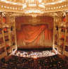
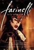

|
|
En la actualidad
disponemos de más de 600 artículos
publicados en la revista y completamente visibles en internet. A
continuación presentamos un breve resumen de los artículos de este mes.

Historia de la ópera desde sus orígenes hasta los musicales. Por
Ivette Rojas.
Concisa historia
de la ópera que va desde sus orígenes hasta el nacimiento de los
musicales. Ideal para personas que empiezan a escuchar el género y
quieren conocer más de él. Explica porqué se origina de la
tragedia griega y en qué consistía este arte tan importante para
el desarrollo de las artes en general. Luego se hace mención de
los principales compositores de ópera y de sus más importantes
trabajos. |
|
La musicoterapia. La forma o estilo musical como tratamiento en
los desórdenes psicoanímicos. Por Cristina
I. Vargas.
La
musicoterapia es hoy día, objeto de atención y estudio dada su
aplicación en distintos problemas de salud humana de orden
psicoanalítico. Esta revisión incluye un bosquejo histórico
sobre las distintas eras en el desarrollo de las llamadas formas
musicales, la contribución de los grandes compositores en tal
campo y los beneficios que se pueden obtener de algunas de las
formas musicales en la salud humana. |
¿Cómo trabajar la música en Educación Infantil? Por
Natalia López.
La
educación musical es un aspecto muy importante en el desarrollo
infantil, y se puede trabajar desde diferentes enfoques y a través
de infinidad de actividades debido al principio de globalización
de la educación. Esta perspectiva nos indica que no debemos
separar ni jerarquizar las enseñanzas, sino trabajarlas de forma
integral. Por esta razón, al ejercitar la psicomotricidad, por
ejemplo, lo podemos hacer con una actividad al ritmo de algunos
instrumentos musicales. |
|
La música como parte del aprendizaje educativo. Por
Lucía Díaz.
El
aprendizaje ha sido siempre un proceso duro y difícil, tanto
para el maestro/a como para el alumno/a, pero antiguamente no se
disponía de la cantidad de materiales e ideas que hoy día
poseemos nosotros. Antes, la educación se basaba en la
transmisión de conocimientos de forma natural y simple, y hoy en
día, poseemos unas técnicas y unas estrategias que hacen que esa
transmisión sea placentera para el maestro/a. |
La voz, el canto y el arte de comunicar. Por Cristina
I. Vargas.
Una
palabra no comienza como palabra, es un producto final que se
inicia como un impulso o estímulo en la actitud y conducta de los
individuos como necesidad de expresión. La necesidad de nombrar
según Freud, se da gracias a la ausencia y su vez al
reconocimiento del otro (entendiendo “el otro” como lo que está
fuera de mí), esto es lo que hace posible el tránsito a lo humano,
porque el sujeto solo se constituye como tal a partir del símbolo. |
|

La música en el cine silente y sonoro. Por Cristina
I. Vargas.
La música
tiene funciones tales como las de comunicar, entretener y
ambientar. Es por esto y otros factores que se van a señalar más
adelante, que en el cine mudo nace la necesidad de acompañar
imagen con música. El cine se va a iniciar como un género
popular en pequeñas salas, cafés y teatrillos de las ciudades.
Para disimular el ruido que hacían las máquinas de proyección y
para amenizar a la audiencia. |
|